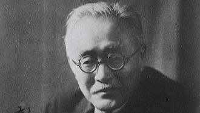

出身:花巻
誕生日: 1896.8.27
職業:詩人・童話作家
ニックネーム:石ッコ賢さん
盛岡中学から盛岡高農に進み、農芸化学を専攻、研究科では地質学・土壌学・肥料学を学ぶ。花巻農学校教師を経て、1926年(大正15)、羅須地人協会を設立。法華経思想と科学との統一を農民指導・心象スケッチの作品にかけた。仏教説話・動物寓話・デクノボー童話によって、宇宙・四次元世界へと思考を発展させ美しいイーハトヴのユートピア世界を創造した。これらは詩集『春と修羅』・童話集『注文の多い料理店』などに収められ1924年に刊行。真の宗教者・科学者の道を厳しい菩薩行に求め、そのヒューマニズムは「農民芸術」として結晶した。

出身:盛岡
誕生日: 1862.9.1
職業:思想家
別名:太田稲造
農・法学博士、貴族院議員、実践的思想家。教育者としての職歴は多彩で、特に1906年(明治39)東大教授と併任した旧制一高校長時代に特色を発揮、自由主義の逸材を輩出した。1900年英文で書いた『武士道』は日本民族の道義と倫理の根本を実証、欧米の指導層・知識階層に愛読された。『われ太平洋の橋とならん』は西洋の文明を日本へ、日本の文化を西洋へが新渡戸の悲願であった。思想家・国際連盟事務次長として、この悲願を実践したが、満州・上海両事変は新渡戸の思想と実践に大きな苦悩を与え、カナダ・ビクトリア市にて客死。
出身:普代村
誕生日: 1988.2.24
職業:プロ野球選手
本名:赤見内銀次
小学3年生から野球を始め、6年生時に東北大会で準優勝。普代中学3年生時にKボール全国大会へ岩手選抜の一員として出場した。盛岡中央高校では1年生時から左翼手としてレギュラー出場。その後三塁手を経て、2年夏から捕手に転向する。2年の秋季東北大会において8打席連続安打、12打席連続出塁を記録、チームはベスト8まで進出した。2005年の高校生ドラフト会議で、地元球団である東北楽天ゴールデンイーグルスから3巡目指名を受け、入団。
ベストナイン:2回(三塁手部門:2014年、一塁手部門:2017年)
ゴールデングラブ賞:1回(一塁手部門:2017年)
月間MVP:1回(野手部門:2014年9月)
日本シリーズ優秀選手賞:1回(2013年)
イースタン・リーグ首位打者:1回(2011年)
イースタン・リーグ ファーム月間MVP:1回(2010年6月)